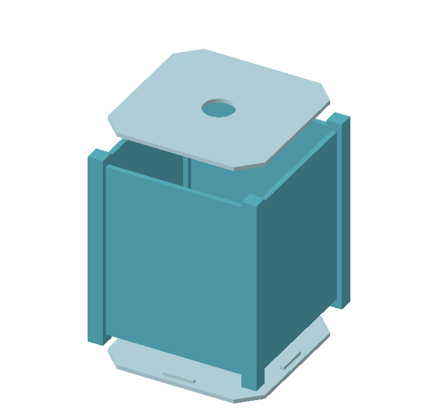

An open volunteer space lab
Your first satellite mission starts in the classroom.
Run a practice ground station, bring back a sensor reading, and share what you learned with the next crew.
Start the ground station
One command to start
Paste this into your terminal, then open the address it prints.
curl -fsSL https://steelhead99x.github.io/cubesat-classroom/start.sh | bash
macOS, Linux or WSL. The station uses simulated sensors and video.
Give the next crew a head start
Repeat a lesson, document a test, or improve a part. Teachers, students, and radio volunteers can each take a quest.
Support Teachers in Space
CubeSat Classroom is an independent volunteer contribution. Give directly to Teachers in Space to support its teacher training and spaceflight campaign.